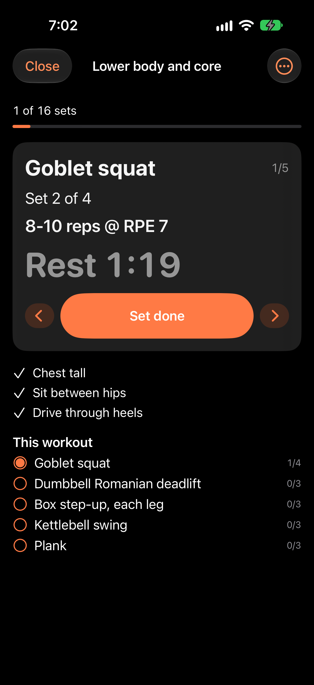
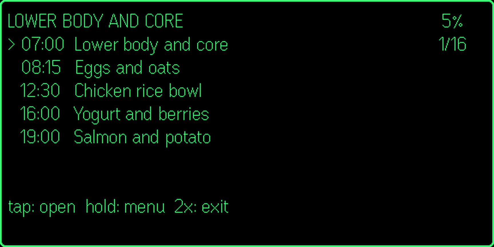
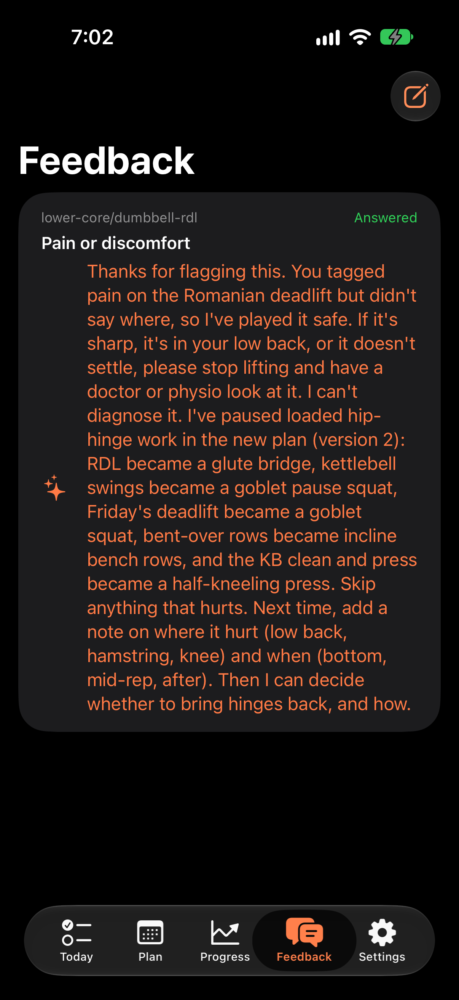
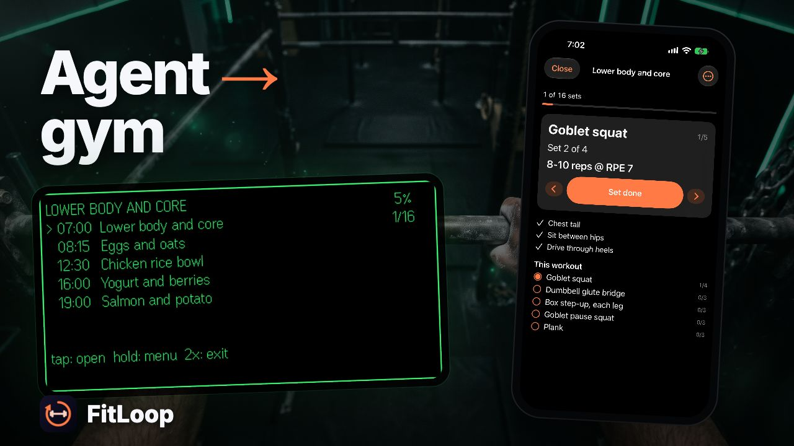

Demo video · finished 2026-11-08
Your agent writes the plan. FitLoop keeps you on it.
FitLoop's walkthrough is rendered and ready to upload: 2:18 in 16:9 with six YouTube chapters and a 29-second 9:16 Short. Every product frame is a real recording from the local stack: two real Claude Code runs over FitLoop's MCP (sign-in and consent, building and publishing the plan; later reading a note and changing the plan), the iPhone app driven tap by tap on the simulator, and the Even G2 plugin in the Even Hub simulator driven with R1 gestures.
/Volumes/proj/github/hejitech-apps/branding/promo-videos/public/fitloop-demo/.What changed from the first cut (Nov 3)
- The real UI is the star now. The first cut was the animatic: text cards with the app as small thumbnails. Every step now plays its own recording, large, with the camera following the event log.
- New recordings for every step, from a scripted XCUITest driver (
scripts/ios-uidriver) and two live agent runs, replacing the four short promo clips. - Script rewritten to match what's on screen. The old one promised exercise GIFs, live Watch heart rate and "squats swapped for step-ups"; none of that was in the footage. What the agent actually did: it swapped today's Romanian deadlift for a glute bridge after the "It hurts" note.
- Music fitted, not looped: the track's intro, a 16-bar section repeated on bar lines, then its own ending, so the video ends on the music's ending.
Worth knowing before you publish
- The Apple Watch isn't shown. It's named once as a surface (it is one), but no step claims what it does on screen.
- Heart rate on the glasses is demo data sent by the recorder in place of a Watch; the glasses clip says so on screen.
- Claude Code's account banner is covered (plan name, a referral notice); its autocomplete with your own skills is cut.
- The agent's words are its own (Sonnet in Claude Code, on the local stack), including the safety advice in its reply.
| If you want to redo | What to do |
|---|---|
| A line of the script | Change it in scripts/fitloop-demo-vo.py, then fitloop-demo-vo.py … --only <id>, fitloop-demo-words.py, render. |
| The voice | Any Kokoro voice (af_heart, af_bella, af_nicole); all lines take about a minute. |
| A recording | node branding/promo-videos/scripts/fitloop-demo-record.mjs <step> (§Recordings); the camera re-aims itself from the new event log. |
| Length | 2:18 is over the 2:00 aim. The cheapest cut: drop the consent step (c1-3, 6 s) and the meal step (c4-1, 3 s). |
The edit: two cuts to review
fitloop-demo.mp4
fitloop-demo-short.mp4
| Compositions | fitloop-demo (1920×1080), fitloop-demo-short (1080×1920), fitloop-demo-thumb, fitloop-demo-short-thumb in branding/promo-videos/src/fitloop-demo/Composition.tsx |
|---|---|
| Chapters | 0:00 Intro 0:15 1 · Your agent writes the plan 0:58 2 · Train with your phone 1:15 3 · Hands-free on your glasses 1:41 4 · Your agent adapts 2:04 Recap |
| Pace and camera | One step per narration line; each recording plays from one action to the next at the speed its line needs (a ⏩ badge when faster than 1.6×). The phone camera pans and pushes in on each touched element (from the event log), with a ripple on taps and a spotlight; the step's label appears in large type beside the phone. |
| The agent runs | Replayed from the saved terminal stream: typing and the start at 1×, the thinking as a time-lapse with a "real time" clock, the publish at 1×. FitLoop's MCP calls (which the terminal collapses into "Called fitloop 6 times") pop in as chips, from Claude Code's own transcript. |
| Legibility | Phone text ≈ 26–32 px at 1080p, terminal ≈ 27 px, glasses ≈ 40 px. Checked on stills at every step and a 1-frame-per-3-seconds sheet of the render. |
| Sound | Kokoro af_sarah at 1.06×; music at 0.5, ducked to 0.22 under the voice; two-pass loudnorm to −14.5 LUFS, true peak −1.2 dB. Not yet heard by a person: please listen. |
Chapters and script
For people who already use an AI agent and train in a gym: what FitLoop does, in the order they'd meet it. The script follows the recordings line by line; every claim is on screen.
Intro
1 · Your agent writes the plan
2 · Train with your phone
3 · Hands-free on your glasses
4 · Your agent adapts
Recap and end card
The Short
Look and feel
A polished high-performance athletic aesthetic: deep midnight indigo backgrounds contrasted with energetic coral-orange accents and crisp phosphor-green glasses HUD.
| Typography | Inter for UI titles and step explanations; JetBrains Mono for sets, weights, and HUD lines |
|---|---|
| Device Frames | A plain dark phone body rising from the bottom of the frame (the camera pans and pushes in on each touch), a dark window for the web and the terminal (3D tilt that settles flat), the Even G2 display as green-on-black in a floating frame |
| Transitions | One family: a blur-dissolve between steps and chapters, chapter title cards over each chapter's Flow backdrop; within a recording the camera springs onto each target and back |
| Captions | KineticCaption bottom band; spoken word highlights white on black with coral accent marker |
| What never appears | No AI-generated app screens (every product frame is a recording), no medical advice, no claims the recordings don't show, no account details (Claude Code's banner is covered) |
Flow art prompts
Prompts for Google Flow. All prompts follow the rule: cinematic 35mm photography, subtle natural lighting, high production value, no logos, no text. All seven are in /Volumes/proj/github/hejitech-apps/branding/promo-videos/public/fitloop-demo/ and used (file names in src/fitloop-demo/media.md); the prompts stay here so any one can be regenerated.
Flow Generation Settings
Model: Google Flow (Video / Frames). Aspect ratio: 16:9 (1920×1080) for backdrops and opener; 2K still image for end card. Camera motion: gentle slow push-in or subtle horizontal drift.
A1 · Athletic training studio
Cinematic wide shot of a modern athletic training studio with warm morning sunlight streaming through industrial steel windows, neat dumbbell racks in soft background blur, warm wooden lifting platform, high-end commercial aesthetic, 35mm film photography, gentle dust motes in sunbeams, no logos, no text
B1 · Workstation with tablet calendar
Minimalist modern desk aesthetic, sleek black mechanical keyboard, tablet resting on an aluminum stand displaying a geometric weekly calendar grid, cup of espresso, warm soft atmospheric lighting, architectural interior design, no logos, no text
B2 · Workout bench & dumbbells
Close-up cinematic shot of an adjustable leather workout bench in a quiet gym, black urethane dumbbells neatly racked beside it, soft warm rim lighting and deep indigo shadows, clean modern fitness photography, no logos, no text
B3 · Athletic POV with emerald HUD glow
First-person athletic perspective looking down at athletic chalked hands gripping a pull-up bar, subtle emerald-green phosphor reflections across the field of view, moody dark background with green neon rim accents, clean cinematic depth of field, no logos, no text
B4 · Sunlit kitchen & healthy meal
Bright modern kitchen island in morning sunlight, ceramic bowl with grilled chicken, avocado, and fresh greens, clear glass water bottle, serene domestic architecture, clean food editorial photography, no logos, no text
A2 · Gym floor at sunrise
Low-angle slow gliding camera move across polished gym rubber flooring at sunrise, matte black kettlebells and cast iron plates catching warm golden morning light, serene and empowering mood, 35mm film still, no logos, no text
A3 · Dark fitness studio with indigo glow
Atmospheric dark gym interior at night, subtle coral-orange and deep indigo neon ambient gradients across acoustic panel walls, sleek empty training space, peaceful and premium aesthetic, 35mm film photograph, no logos, no text
Recordings and screenshots
Recorded 2026-11-08 on the local stack (seed athlete, a demo profile, Sunday Nov 8 as "today"), with scripts/fitloop-demo-record.mjs. Phone clips: the iPhone 18 Pro simulator, driven by scripts/ios-uidriver (XCUITest) while simctl io recordVideo records; a status-bar flash at the start syncs the event log to the video within ~0.1 s. Glasses: the Even Hub simulator's screenshots while R1 gestures are sent.
| Clip | What happens | Source |
|---|---|---|
rec-1-connect | FitLoop web Settings → Agents (MCP) → Copy URL | Playwright, 1280×720 @2× |
rec-1-terminal, -consent, -connected | Claude Code /mcp → fitloop → Authenticate; FitLoop's consent page → Allow; "Authentication successful" | Live run 1 (pty) + Playwright |
rec-1-agent | "Set up my training plan in FitLoop, starting today." → plan guide, profile, current plan, feedback → validate ×2 → publish v1 → its summary | Live run 1, replayed (12× in the middle) |
rec-1-today | Today: the agent's note, today's workout | iPhone simulator |
rec-2-workout | Tap the workout → Goblet squat, cues → Set done → Rest 1:30 | iPhone simulator |
rec-3-pair | Settings → Pair glasses → Get a pairing code | iPhone simulator |
rec-3-glasses | Paired; today → tap: open (set 2) → tap: set done, REST 1:30 → swipe: next exercise → hold: menu → Tell agent: It hurts | Even Hub simulator |
rec-4-meal | Today → lunch → Ate it | iPhone simulator |
rec-4-agent | "I left a note in FitLoop…" → reads it → validate → publish v2 → reply | Live run 2, replayed (10×) |
rec-4-reply, rec-4-next | Feedback: the note and the agent's reply; today's workout in v2 (Dumbbell glute bridge, Goblet pause squat) | iPhone simulator |



Re-recording
supabase start; npm run dev:worker -w @fitloop/web # Worker on 127.0.0.1:8794 R=branding/promo-videos/scripts/fitloop-demo-record.mjs node $R stage # backs up the fitloop rows; demo profile, no plan node $R connect; node $R agent1 # a live Claude Code run (answer it through agent-run-1.json.keys if it asks) node $R phone1; node $R workout; node $R pair; node $R glasses; node $R meal node $R agent2; node $R phone2; node $R term node $R restore # every fitloop row back as it was
Voiceover and music
| Voice | Kokoro-82M af_sarah (the promo's voice), 1.06×, one file per line (vo-af_sarah-<id>.wav); word times from faster-whisper (src/fitloop-demo/voiceover.ts) |
|---|---|
| Music | Your Flow Music take "Gym Pro Grooves" from the promo (103.4 BPM, 59 s). MusicBed plays its intro, repeats a 16-bar section on bar lines, then its own ending, so the 2:18 cut ends on the track's ending without an audible loop point. Ducked under the voice. |
| If you want a dedicated track | Generate one in Flow Music with the prompt below, save it as music-140s-take1-<title>.mp3 in the media folder, and point TRACK in the composition at it. |
Instrumental, warm and driving tech-athletic groove, 103 BPM, 4/4, clear downbeats every bar, clean synth pulse, muted electric bass, light percussion, long even sections with no big drops, open mids that leave space for a voiceover, soft intro, gentle lift near the end, a clean resolving ending, 2 minutes 30 seconds
YouTube upload kit
Walkthrough (16:9, Public)
How FitLoop works: your AI agent's training plan, on your phone and glasses
FitLoop lets your own AI agent coach you. Connect any MCP agent (Claude Code is shown), ask it for a plan, and train with it on your iPhone and your Even G2 glasses with the R1 ring. Your check-ins and notes go back to the agent, which changes the plan. In this video: 0:00 Intro 0:15 1 · Your agent writes the plan 0:58 2 · Train with your phone 1:15 3 · Hands-free on your glasses 1:41 4 · Your agent adapts 2:04 Recap FitLoop: https://fitloop.hejitech.workers.dev Demo data throughout (plan, weights, meals, heart rate). FitLoop and your agent give no medical advice. The agent runs are real Claude Code sessions, shown sped up. Backdrops are AI-generated (Google Flow); the narration is a synthetic voice (Kokoro).
FitLoop, AI agent, MCP, Claude Code, workout plan, Even G2, smart glasses, R1 ring, gym, training app, HEJI TECH
| Video | fitloop-demo.mp4 |
|---|---|
| Subtitles | fitloop-demo.srt (21 cues, English) |
| Thumbnail | fitloop-demo-thumbnail.jpg (1280×720) |
| Altered or synthetic content | No: the AI backdrops show no realistic people or events presented as real, and the voice is a narrator. |
| Playlist | FitLoop |


Short (9:16, Public)
My AI agent's workout, on my glasses #shorts
Your agent writes the workout. FitLoop puts it on your Even G2 glasses: tap the R1 ring when a set is done, hold it to tell your agent something hurts, and the agent changes the plan. https://fitloop.hejitech.workers.dev Demo data; no medical advice. Synthetic narration, AI-generated backdrop.
| Video | fitloop-demo-short.mp4 |
|---|---|
| Subtitles | fitloop-demo-short.srt |
| Cover (posts) | fitloop-demo-short-thumbnail.jpg |

After upload: send the walkthrough's link; it goes into projects/fitloop/docs/index.md ("Watch the walkthrough", with chapter links) and the landing page's "How it works" (the promo stays the hero video).
Steps, checklist, and risks
- Watch both cuts with soundOn a laptop and on a phone. The mix hasn't been heard by a person.
- Check the facts on screenThe agent's plan and reply are its own words; FitLoop's URL on the end card.
- Upload both (§YouTube kit)Walkthrough with chapters + SRT; the Short.
- Send the walkthrough linkFor the docs page and the landing page.
Risks
| Risk | Handling |
|---|---|
| 2:18 is longer than the 2:00 aim | Every step is a real action with its result; the cuts that would save time are listed in §Summary. |
| The agent's run can't be reproduced word for word | Its byte stream is saved (agent-run-1.json, agent-run-2.json); the replays are rebuilt from those, not re-run. |
| Simulator, not a device | Scripted runs need the simulator (repeatable, clean status bar); the end card and description say demo data. |
| Health-adjacent advice in the agent's reply | It's the agent's (cautious) reply, shown as such; the end card and description say neither FitLoop nor the agent gives medical advice. |
Your notes
Questions, corrections, decisions. Saved in this browser. Copy summary puts the whole report, your ticks and these notes on the clipboard for any agent, in this session or a new one.